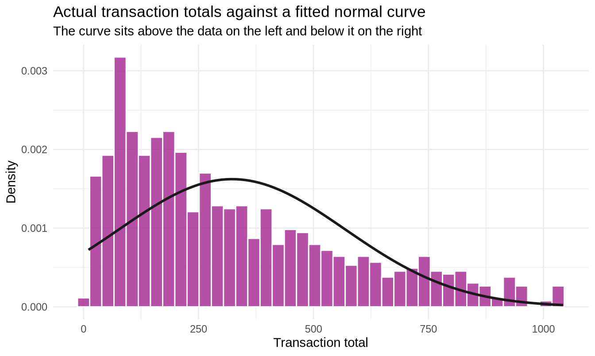

Show the code
library(tidyverse)
library(readxl)
sales <- read_excel("../data/supermarket_sales.xlsx")
p_member <- mean(sales$`Customer type` == "Member")307102 Descriptive Statistics for Business | University of Petra
Every chunk runs. Section headings match the student notebook.
library(tidyverse)
library(readxl)
sales <- read_excel("../data/supermarket_sales.xlsx")
p_member <- mean(sales$`Customer type` == "Member")p_ewallet <- mean(sales$Payment == "Ewallet")
p_ewallet#> [1] 0.345# "Fewer than 4" means 3 or fewer
pbinom(3, size = 15, prob = p_ewallet)#> [1] 0.1831538The concept being tested is translating English into an inequality. “Fewer than 4” excludes 4, so it is “3 or fewer”, so pbinom(3, ...).
Students who answer pbinom(4, ...) have made the single most common error with discrete distributions. It is worth putting three phrasings on the board and having the class translate each:
| English | Includes the number? | Code |
|---|---|---|
| “at most 4” | Yes | pbinom(4, ...) |
| “fewer than 4” | No | pbinom(3, ...) |
| “more than 4” | No | 1 - pbinom(4, ...) |
| “at least 4” | Yes | 1 - pbinom(3, ...) |
The last row catches almost everyone the first time.
dpois(0, lambda = 2.5)#> [1] 0.082085About 8 percent.
Discussion point. A complaint-free week is uncommon but unremarkable - it will happen roughly four times a year by chance alone. Worth raising: if a manager introduces a quality initiative and the next week has zero complaints, that is not evidence the initiative worked. You would expect that outcome one week in twelve regardless.
This is the intuition behind hypothesis testing, arriving two sections early. It lands well here because the arithmetic is simple enough that the logic stands out.
Covered in the student notebook’s collapsible answer. The two points to draw out:
Worth adding for stronger students: the Poisson is the limit of the binomial as n goes to infinity and p goes to zero with n * p held constant. The colleague’s instinct was not silly, just unfinished.
n <- 25
p <- 0.30
# a. Exactly 8
dbinom(8, size = n, prob = p)#> [1] 0.1650796# b. 10 or more = 1 - P(9 or fewer)
1 - pbinom(9, size = n, prob = p)#> [1] 0.189436# c. Expected value and standard deviation
tibble(
expected = n * p,
sd = sqrt(n * p * (1 - p))
)#> # A tibble: 1 × 2
#> expected sd
#> <dbl> <dbl>
#> 1 7.5 2.29Expected results. (a) about 0.165; (b) about 0.189; (c) expected 7.5, sd about 2.29.
Marking guidance. Part (b) is the discriminator. “10 or more” means 1 - pbinom(9, ...), not 1 - pbinom(10, ...). Students who get (a) right and (b) wrong have understood the distribution but not the boundary convention - give partial credit and point them at the translation table above.
Part (c) is worth a follow-up in class: the expected value is 7.5, which is not a possible outcome. Expected values need not be attainable. That surprises students and is worth thirty seconds.
lambda <- 3
# a. Exactly 5
dpois(5, lambda = lambda)#> [1] 0.1008188# b. More than 6 = 1 - P(6 or fewer)
1 - ppois(6, lambda = lambda)#> [1] 0.03350854# c. Capacity planning table
tibble(
capacity = 3:9,
prob_overwhelmed = round(1 - ppois(3:9, lambda = lambda), 4)
)#> # A tibble: 7 × 2
#> capacity prob_overwhelmed
#> <int> <dbl>
#> 1 3 0.353
#> 2 4 0.185
#> 3 5 0.0839
#> 4 6 0.0335
#> 5 7 0.0119
#> 6 8 0.0038
#> 7 9 0.0011Expected results. (a) about 0.101; (b) about 0.034.
Part (c) is where the marks are. The table itself is mechanical. The recommendation requires judgement, and there is no single right answer - which is the point.
A strong answer names a capacity and states the risk it accepts:
Staffing for capacity 3 - the daily average - leaves us unable to cope on about 35 percent of days, which is clearly unacceptable. Capacity 5 brings that down to about 8 percent, and capacity 6 to about 3 percent. I would recommend 5, on the grounds that the step from 4 to 5 removes far more risk than the step from 5 to 6, and a one-in-twelve overflow day can be absorbed by handling a backlog the following morning.
The exact figures, for reference when marking: capacity 3 leaves 35.3 percent of days overwhelmed, 4 leaves 18.5 percent, 5 leaves 8.4 percent, 6 leaves 3.4 percent and 7 leaves 1.2 percent.
A weak answer picks a number without naming the trade-off, or recommends capacity 9 without acknowledging that near-zero risk is expensive.
Planning for the average means failing about half the time.
Students consistently underestimate this. Ask the class to guess the overflow probability at capacity 3 before showing the table - most say 10 or 20 percent. The true figure of roughly 35 percent is a genuinely useful surprise.
t_mean <- mean(sales$Total)
t_sd <- sd(sales$Total)
tibble(mean = round(t_mean, 2), sd = round(t_sd, 2))#> # A tibble: 1 × 2
#> mean sd
#> <dbl> <dbl>
#> 1 323. 246.# a. Predicted by a normal model
predicted <- 1 - pnorm(800, mean = t_mean, sd = t_sd)
# b. Actually observed
actual <- mean(sales$Total > 800)
tibble(
predicted = round(predicted, 4),
actual = round(actual, 4)
)#> # A tibble: 1 × 2
#> predicted actual
#> <dbl> <dbl>
#> 1 0.0262 0.058Expected results. The normal model predicts roughly 2.5 percent of transactions above 800; the data actually contains roughly 6 percent. The model under-predicts the tail by more than a factor of two.
Part (c) is the exercise. The section 2 finding that predicts this is right skew: skewness of Total was about 0.89, and the mean (323) sat well above the median (254).
A normal distribution is symmetric. Forcing a symmetric model onto a right-skewed variable makes it systematically underestimate how often large values occur, because the real distribution has a longer right tail than the model allows.
Why this matters commercially. If you used this normal model to size anything that depends on large transactions - cash handling, fraud thresholds, high-value customer programmes - you would be wrong in the expensive direction. The model does not merely have errors; its errors are biased in a predictable direction, which is far worse.
ggplot(sales, aes(x = Total)) +
geom_histogram(aes(y = after_stat(density)), bins = 40,
fill = "#A83296", colour = "white", alpha = 0.85) +
stat_function(fun = dnorm, args = list(mean = t_mean, sd = t_sd),
colour = "#1A1A1A", linewidth = 1) +
labs(title = "Actual transaction totals against a fitted normal curve",
subtitle = "The curve sits above the data on the left and below it on the right",
x = "Transaction total", y = "Density") +
theme_minimal()
That plot is worth showing in class. The mismatch is visible without any arithmetic, and it makes the point better than the numbers do.
sales |>
mutate(
total_z = (Total - mean(Total)) / sd(Total),
rating_z = (Rating - mean(Rating)) / sd(Rating)
) |>
summarise(
max_total = max(Total),
max_total_z = round(max(total_z), 3),
max_rating = max(Rating),
max_rating_z = round(max(rating_z), 3)
)#> # A tibble: 1 × 4
#> max_total max_total_z max_rating max_rating_z
#> <dbl> <dbl> <dbl> <dbl>
#> 1 1043. 2.93 10 1.76Expected results. The largest transaction is 1042.65, with a z-score of about 2.93. The highest rating is 10, with a z-score of about 1.76.
The answer: the transaction is the more extreme observation. It sits nearly three standard deviations above its mean, while the highest possible rating is less than two above its own.
Marking guidance. The comparison is the point, not the arithmetic. Look for the student explaining why z-scores permit a comparison that raw values do not: 1042.65 and 10 are measured in different units on different scales, and the z-score converts both to the common currency of “standard deviations from the mean”.
Extension worth raising. The maximum rating can never have a large z-score, because the scale is capped at 10. A bounded variable cannot produce extreme standardised values. This is the same structural point as the Rating outlier exercise in section 2, and connecting the two helps it stick.
| Situation | Distribution | Justification |
|---|---|---|
| a. Items in a basket | Poisson (or a discrete count model) | Counting events with no fixed maximum and a roughly constant average rate. In practice basket sizes are often over-dispersed, so a negative binomial fits better - but Poisson is the right answer at this level. |
| b. Queue abandonments in an hour | Poisson | Events in a fixed interval of time, no natural upper limit. |
| c. Daily total revenue | Normal | A continuous quantity formed by adding many independent transactions. The Central Limit Theorem (section 3.2) is the formal justification. |
| d. Returns among the next 40 orders | Binomial | A fixed number of trials (40), two outcomes per trial, roughly constant return probability. |
Marking guidance. Accept the distribution name only with a justification that names the structural feature - fixed number of trials, no upper limit, continuous measurement, sum of many small effects. A student who writes “Poisson because it is a count” has pattern-matched rather than reasoned; counts can be binomial too, and the distinguishing feature is whether there is a fixed n.
Part (a) is deliberately arguable. In this dataset Quantity runs from 1 to 10, so there is an effective maximum, which makes a binomial defensible. Accept either with good reasoning. Students noticing the ambiguity unprompted are doing exactly what you want.
Part (c) is the one to dwell on. Individual transaction totals are clearly not normal - that was Exercise 3. But their sum over a day is much closer to normal. That distinction between the distribution of individual values and the distribution of their sum is precisely the Central Limit Theorem, and flagging it here sets up the next notebook.
Where students get stuck.
pbinom and ppois. Expect to explain “at least” versus “more than” more than once. The translation table in the first solution above works well on a slide.dnorm versus pnorm. Students reach for dnorm when they want a probability. Emphasise that for continuous distributions dnorm returns a density, not a probability, and that the probability of any exact value is zero. The density can even exceed 1 for a narrow distribution, which is a good way to prove it is not a probability.Timing. Sections 1 to 3 fill one 90-minute session; sections 4 to 7 fill a second. If you have only one session, cut section 7 (simulation) and set it as reading - though it is the section students report enjoying most.
Connecting to the Excel track. BINOM.DIST(k, n, p, FALSE) is dbinom; BINOM.DIST(k, n, p, TRUE) is pbinom. NORM.DIST(x, mean, sd, TRUE) is pnorm; NORM.INV(p, mean, sd) is qnorm. NORM.S.DIST and NORM.S.INV are pnorm and qnorm with the mean and sd left at their defaults of 0 and 1.
The printed z-tables in the Z and T Tables folder are now optional. Students should still see one once, so they understand what published tables were for, but pnorm replaces them entirely and without interpolation error.